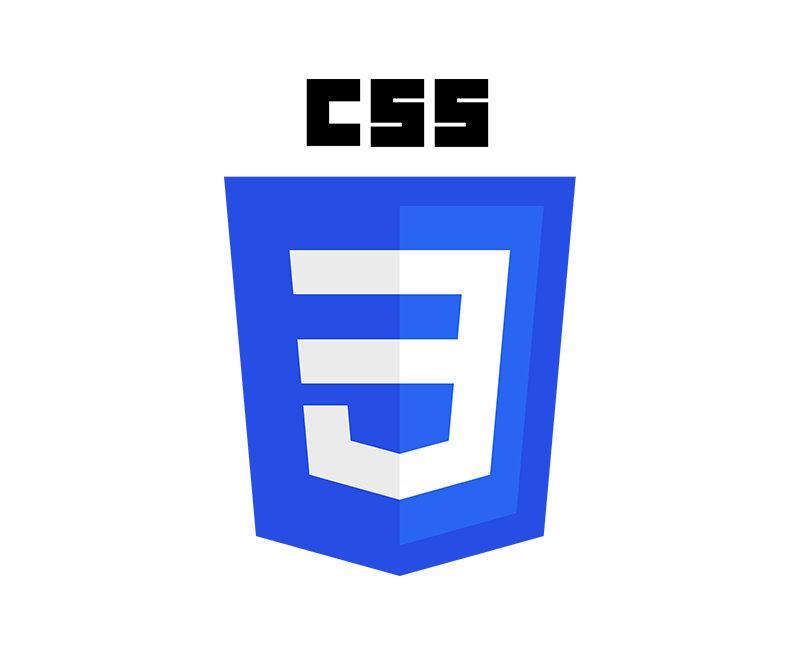

Detalle de lo visto en clases...
Empezamos con HTML - Incorporamos el control de versiones de repositorios locales y remotos

HTML, acrónimo en inglés de HyperText Markup Language, hace referencia al lenguaje de marcado utilizado en la creación de páginas web. Este estándar que sirve de referencia del software que interactúa con la elaboración de páginas web en sus diferentes versiones.

GitHub es una forja para alojar proyectos utilizando el sistema de control de versiones Git. Se utiliza principalmente para la creación de código fuente de programas de ordenador. El software que opera GitHub fue escrito en Ruby on Rails. Desde enero de 2010, GitHub opera bajo el nombre de GitHub, Inc.
Incorporamos estilos en nuestras páginas (o docs. HTML) con CSS
Temas principales
- Tipos de implementación
- Selectores
- Tipos de medidas
- Colores, tipografías e íconos
CSS, en español «Hojas de estilo en cascada», es un lenguaje de diseño gráfico para definir y crear la presentación de un documento estructurado escrito en un lenguaje de marcado.